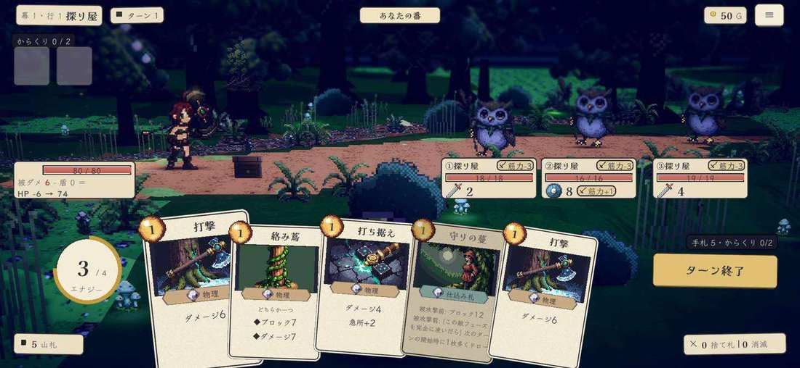
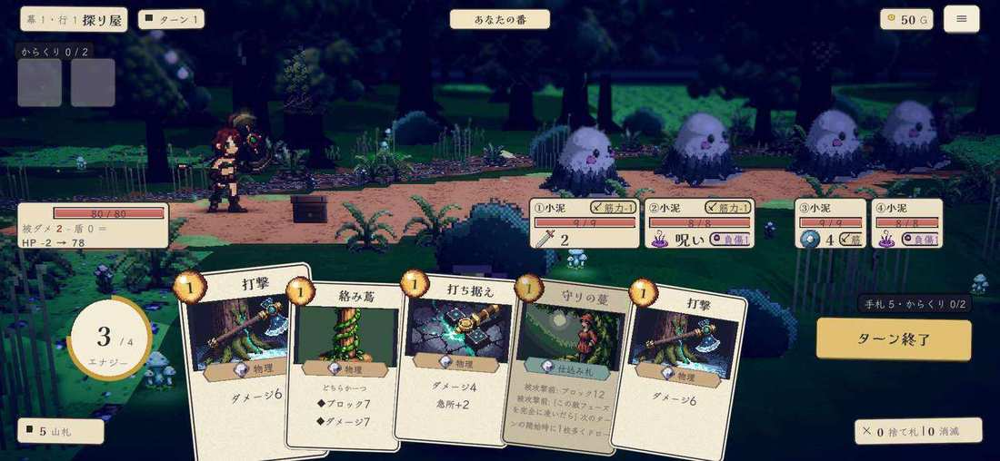

① 意図 (いちばん読ませたい数字) が足元の札の3段目・22px。名前・筋力・HP と同じ箱の中で埋もれる
② 目線: 手札 → 敵の絵 → (下へ) 札 → 意図、の往復。本家は 絵 → すぐ上の意図 の一往復
③ 頭上には狙っている敵の▼だけ。頭上の余白が空いている

④ 4体では札が 104 幅に縮み、rider (負傷1・筋力+1) が切れる。数字は 22px のまま絵 (32) と並ぶので、4体のうち誰が殴ってくるかを読むのに全部の札を見る
現状 案C「帳面の一行」(2026-09-15)。スマホ・探り屋の三人組 (右下は小泥の大群)